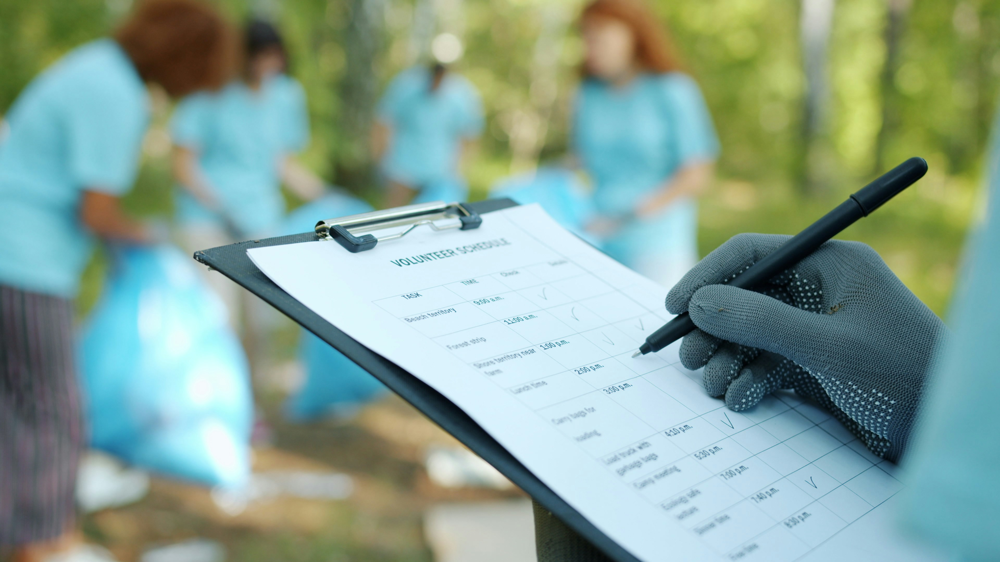

Awal Perjalanan
PENDIDIKAN & INOVASI
Pilah-Pilih resmi didirikan di Surabaya sebagai startup mahasiswa Institut Teknologi Sepuluh Nopember (ITS) yang berfokus penuh pada digitalisasi rantai pasok sampah organik industri.
Pilah-Pilih adalah perusahaan logistik sirkular modern yang didirikan atas dasar kesadaran luhur akan inefisiensi pengelolaan limbah industri. Kami tidak sekadar mengangkut sampah; kami merancang ulang arus material sisa menjadi sumber daya berkelanjutan yang bernilai tinggi dan kompetitif secara komersial.
Kami berkomitmen penuh mempercepat transisi regional menuju model ekonomi sirkular dengan memastikan setiap kilogram material organik yang keluar dari fasilitas Anda memiliki jejak transparansi (traceability) yang jelas ke mitra pengolah akhir terverifikasi.
Telusuri Layanan KamiMengurangi biaya operasional pengelolaan limbah industri hingga 30% melalui efisiensi alur rute rintisan dan pemulihan nilai material organik (Material Recovery).
Mendukung pencapaian target Net-Zero perusahaan mitra dengan integrasi data analitik emisi karbon transparan yang siap digunakan untuk kebutuhan audit laporan tahunan.
Layanan kami mencakup seluruh aspek sirkularitas material organik secara saksama.
Penyelamatan Material
Rata-rata material yang berhasil kami putar kembali ke rantai produksi tanpa berakhir di Tempat Pembuangan Akhir.
Optimasi Rute
Kami menggunakan algoritma pintar seiring mendukung efisiensi biaya logistik pengangkutan sisa komoditas.
Industrial Grade
Solusi logistik yang dirancang khusus untuk skala pabrik, manufaktur, waralaba, dan ritel skala besar.
Menjadi pionir ekosistem logistik sirkular tepercaya serta standar baku baru yang berhasil mengubah residu limbah menjadi nilai ekonomi mapan dan berkelanjutan secara berkelanjutan.
Menyediakan infrastruktur pemilihan multimoda terjamin, pengumpulan saksama, dan kanal rute rintisan berbasis tuntutan pasar guna melayani mitra terkait secara prima.
Integritas tanpa batas, Kepedulian Lingkungan Berkelanjutan, Tanggung Jawab Sosial Nyata, dan Transparansi Data Komprehensif.

Menjangkau kawasan industri utama regional serta mengonsolidasikan jalur sirkular yang terintegrasi penuh.